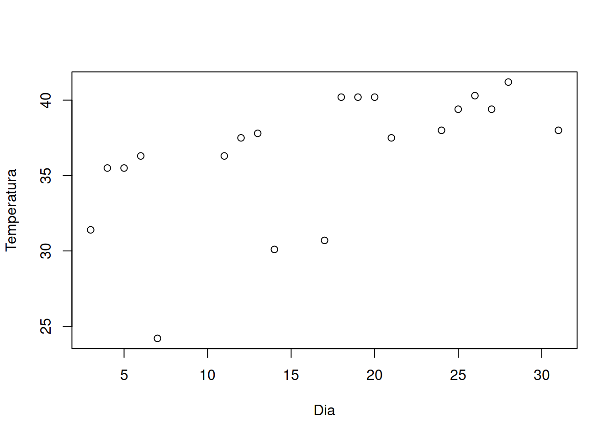
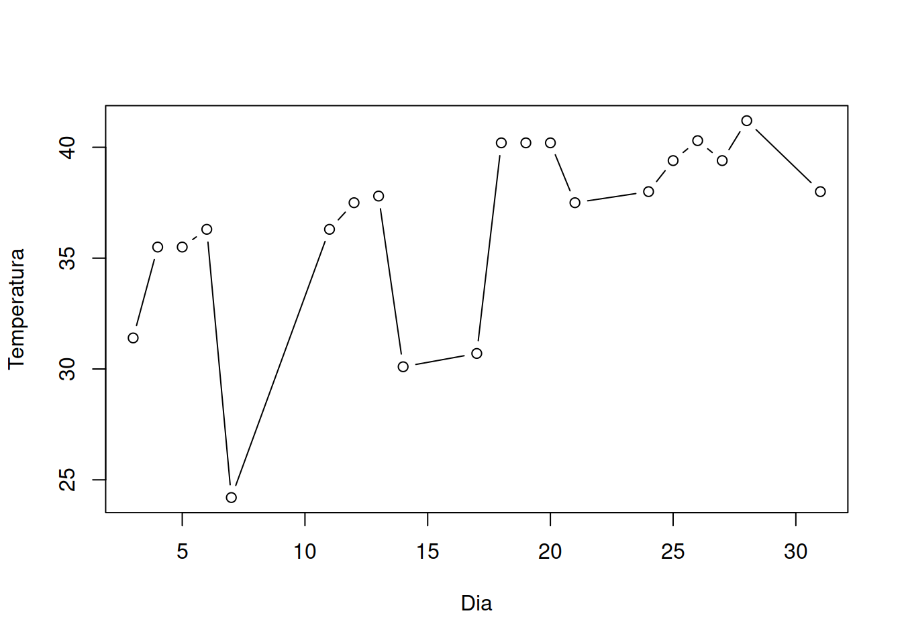
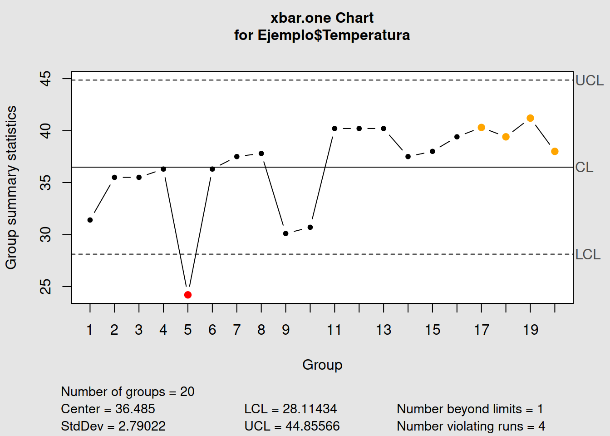
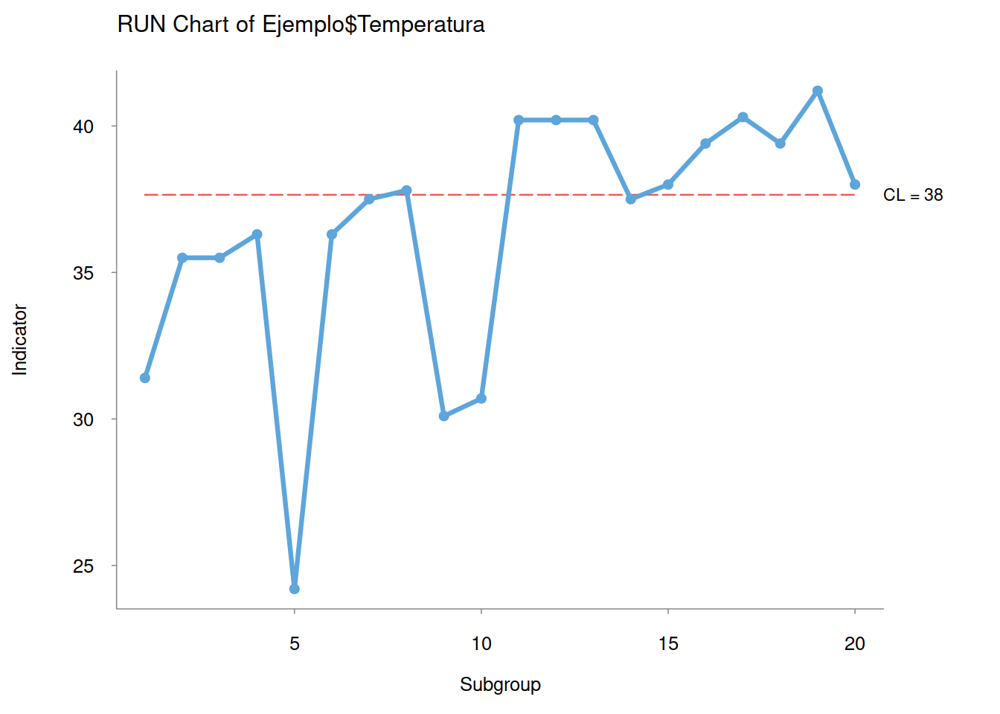
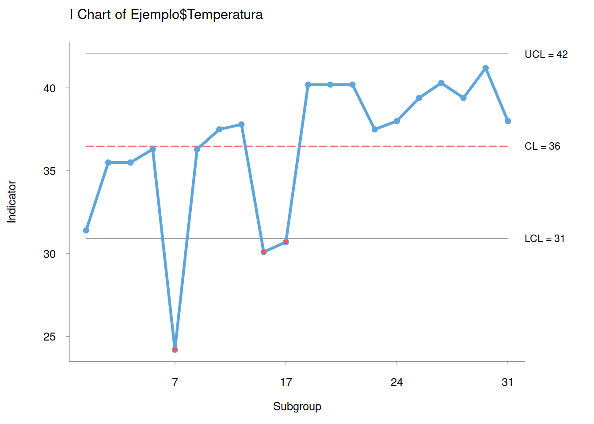
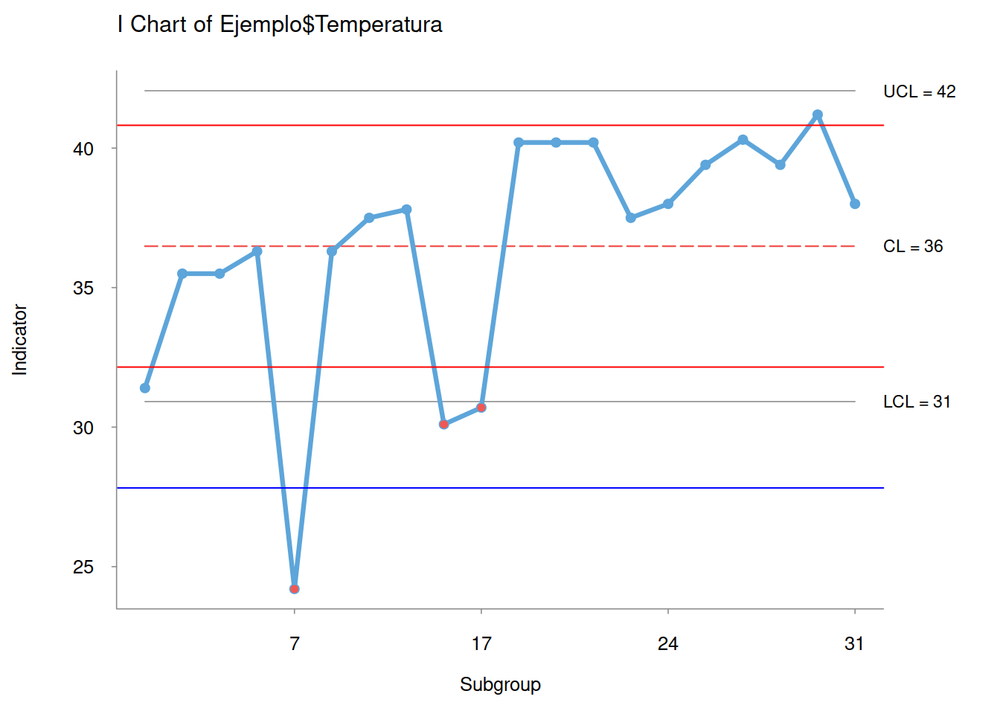

La función básica del gráfico de control es determinar si un proceso es estable o no.
Los límites de control superior e inferior (es decir, UCL y LCL) reflejan los valores máximos y mínimos aceptables. Los límites de control se definen utilizando principios y cálculos estadísticos estándar para eventualmente establecer medios accesibles para un proceso sólido.
Básicamente, los límites de control ayudan a identificar los puntos en los que se deben tomar medidas correctivas para evitar un desempeño extraño e inusual. Un proceso se clasifica como fuera de control cuando un punto de datos excede un límite de control o, alternativamente, siete puntos consecutivos del gráfico están por encima o por debajo de la media.
A continuación, se lee desde R, el archivo que contiene la información. Se utiliza un pequeño conjunto de datos que consta de veinte observaciones para trazar un gráfico de barras \(x\) básico cuando \(n=1\) como una sola columna en una tabla para los fines de este ejercicio.
library(readxl)
Ejemplo <- read_excel("data/Ejemplo2.xlsx")
summary(Ejemplo) Dia Temperatura
Min. : 3.00 Min. :24.20
1st Qu.:10.00 1st Qu.:35.50
Median :17.50 Median :37.65
Mean :16.55 Mean :36.48
3rd Qu.:24.25 3rd Qu.:39.60
Max. :31.00 Max. :41.20 plot(Ejemplo)
plot(Ejemplo, type = "b")
library(qcc)Package 'qcc' version 2.7Type 'citation("qcc")' for citing this R package in publications.qcc(data = Ejemplo$Temperatura,
type = "xbar.one",
plot = TRUE)
List of 11
$ call : language qcc(data = Ejemplo$Temperatura, type = "xbar.one", plot = TRUE)
$ type : chr "xbar.one"
$ data.name : chr "Ejemplo$Temperatura"
$ data : num [1:20, 1] 31.4 35.5 35.5 36.3 24.2 36.3 37.5 37.8 30.1 30.7 ...
..- attr(*, "dimnames")=List of 2
$ statistics: Named num [1:20] 31.4 35.5 35.5 36.3 24.2 36.3 37.5 37.8 30.1 30.7 ...
..- attr(*, "names")= chr [1:20] "1" "2" "3" "4" ...
$ sizes : int [1:20] 1 1 1 1 1 1 1 1 1 1 ...
$ center : num 36.5
$ std.dev : num 2.79
$ nsigmas : num 3
$ limits : num [1, 1:2] 28.1 44.9
..- attr(*, "dimnames")=List of 2
$ violations:List of 2
- attr(*, "class")= chr "qcc"Como se mostró, qcc produjo un gráfico que incluía otra información, como límites de control. El valor inaceptable está codificado por colores y se muestra en rojo.
library(qicharts)qicharts will no longer be maintained. Please consider moving to qicharts2: https://anhoej.github.io/qicharts2/.CartaTemperatura<-qic(y=Ejemplo$Temperatura)
summary(CartaTemperatura) Length Class Mode
y 20 -none- numeric
cl 20 -none- numeric
lcl 20 -none- numeric
ucl 20 -none- numeric
agg.fun 1 -none- character
n 20 -none- numeric
labels 20 -none- character
notes 20 -none- logical
parts 1 -none- list
n.obs 1 -none- numeric
n.useful 1 -none- numeric
longest.run 1 -none- numeric
longest.run.max 1 -none- numeric
n.crossings 1 -none- numeric
n.crossings.min 1 -none- numeric
runs.test 1 -none- logical
signals 0 -none- numeric
dots.only 1 -none- logical
runvals 1 -none- logical
linevals 1 -none- logical
main 1 -none- character
xlab 1 -none- character
ylab 1 -none- character
pre.text 1 -none- character
post.text 1 -none- character
llabs 4 -none- character
nint 1 -none- numeric
cex 1 -none- numeric Carta<-qic(y = Ejemplo$Temperatura, x = Ejemplo$Dia, chart = 'i')
Carta<-qic(y = Ejemplo$Temperatura, x = Ejemplo$Dia, chart = 'i')
m=mean(Ejemplo$Temperatura)
s=sd(Ejemplo$Temperatura)
abline(h=m+s,col = "red")
abline(h=m-s,col = "red")
abline(h=m+2*s,col = "blue")
abline(h=m-2*s,col = "blue")
abline(h=m+3*s,col = "green")
abline(h=m-3*s,col = "green")